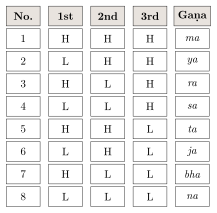

Chapter 3: Chandas: Prosody and Metre¶
chandaḥ pādau tu vedasya
Metre is the feet of the Veda.
— Pāṇinīya Śikṣā
3.1 Introduction¶
Chandas, the science of metre, is the Vedāṅga concerned with the rhythmic patterns of verse. The Vedic hymns were composed in metres defined by the number of syllables in each line, and the names of the principal metres — gāyatrī, triṣṭubh, jagatī, anuṣṭubh — were themselves sacred: the ritual texts associate each with a god, a part of the day’s ritual and a region of the cosmos. Classical Sanskrit poetry developed a large repertoire of strictly regulated metres, and the analysis of these metres gave rise to some of the earliest combinatorial mathematics in India (Plofker 2009). That mathematics is treated more fully in Volume 11, Gaṇita; this chapter describes it as part of the science of metre.
3.2 Basic Units¶
3.2.1 Light and heavy syllables¶
Sanskrit metre is quantitative: it depends on the weight of syllables, not on stress.
- Laghu (light, ⏑)
- a syllable with a short vowel not followed by two or more consonants; one mora (mātrā).
- Guru (heavy, –)
- a syllable with a long vowel or diphthong, or with a short vowel followed by two or more consonants (or by anusvāra or visarga); two morae. The last syllable of a line may count as heavy whatever its form.
3.2.2 The eight triads (gaṇa)¶
For describing the syllabic metres of classical poetry, the prosodists group syllables in threes. There are eight possible triads, each named by a syllable (Table 3.1).
| Gaṇa | Pattern | Description |
|---|---|---|
| ya | L H H | light, heavy, heavy |
| ma | H H H | three heavy |
| ta | H H L | heavy, heavy, light |
| ra | H L H | heavy, light, heavy |
| ja | L H L | light, heavy, light |
| bha | H L L | heavy, light, light |
| na | L L L | three light |
| sa | L L H | light, light, heavy |
A single heavy or light syllable left over at the end of a line is marked ga (guru) or la (laghu). A mnemonic of the later tradition, yamātārājabhānasalagāḥ, encodes all eight triads: read three syllables at a time from each starting point (ya-mā-tā, mā-tā-rā, …), the weights of its syllables give the pattern of the triad named by the first.
3.3 The Vedic Metres¶
The Vedic metres are defined by the number of syllables per verse-line (pāda) and the number of lines, with only a tendency towards a fixed rhythm in the last syllables of each line (Table 3.2).
| Metre | Lines \(\times\) syllables | Total | Notes |
|---|---|---|---|
| gāyatrī | 3 \(\times\) 8 | 24 | Very common in the Ṛgveda; the “Gāyatrī” mantra |
| uṣṇih | 8 + 8 + 12 | 28 | |
| anuṣṭubh | 4 \(\times\) 8 | 32 | Developed into the classical śloka |
| bṛhatī | 8 + 8 + 12 + 8 | 36 | |
| paṅkti | 5 \(\times\) 8 | 40 | |
| triṣṭubh | 4 \(\times\) 11 | 44 | The most common metre of the Ṛgveda, about two-fifths of its verses |
| jagatī | 4 \(\times\) 12 | 48 |
The best-known verse in gāyatrī metre is the prayer to Savitṛ that gives the metre’s name to the whole prayer:
Ṛgveda 3.62.10
tat savitur vareṇyam bhargo devasya dhīmahi
dhiyo yo naḥ pracodayāt
“May we attain that excellent splendour of the god Savitṛ, who shall stimulate our thoughts.”
The ritual literature associates the three great metres with the three Soma pressings of the day and with Agni, Indra and the All-Gods respectively: gāyatrī with the morning pressing and Agni, triṣṭubh with the midday pressing and Indra, jagatī with the evening pressing and the All-Gods (or the Ādityas). These correspondences, elaborated in the Brāhmaṇas, show how metre was treated as part of the cosmic order of the ritual.
3.3.1 The structure of the Vedic line¶
The Vedic poets counted syllables, but they did not ignore quantity. The opening of each line is free, while its close, the cadence, tends towards a fixed pattern of light and heavy syllables. Lines of eight syllables, in the gāyatrī and anuṣṭubh, usually end in an iambic cadence, ⏑ – ⏑ ×, where × is a syllable of either weight. Lines of eleven and twelve syllables, in the triṣṭubh and jagatī, have a caesura after the fourth or fifth syllable and end in a trochaic cadence: – ⏑ – × in the triṣṭubh, ⏑ – ⏑ – × in the jagatī. Lines were grouped into stanzas, and stanzas of different metres could be paired, as in the pragātha, which joins a bṛhatī to a satobṛhatī.
Counting the syllables of the received text often gives the wrong number. A line that should have eight syllables may show only seven, because the redactors who fixed the saṃhitā wrote a semivowel where the poets had pronounced a vowel (tvam for a disyllabic tuam, vīryam for vīriyam) and contracted vowels across word boundaries that the poets kept apart. Hermann Oldenberg’s Prolegomena made the restoration of such readings a standard method of Vedic philology (Oldenberg 1888), and E. Vernon Arnold used the changing metrical practice of the hymns to arrange the Ṛgveda in relative chronological layers (Arnold 1905). Barend van Nooten and Gary Holland have printed the whole collection in a metrically restored form (Nooten and Holland 1994). Metre is thus the main witness to the difference between the hymns as the poets composed them and the text as the tradition fixed and preserved it (Section 2.6).
3.3.2 From anuṣṭubh to śloka¶
The anuṣṭubh of four eight-syllable lines developed into the śloka, the metre of the epics, the Purāṇas, the law books and most technical literature. Its rules are flexible except near the end of each line: in the second and fourth lines, syllables five to seven should normally be light, heavy, light (⏑ – ⏑), and in the first and third lines they should normally be light, heavy, heavy (⏑ – –). The opening verse of Kālidāsa’s Raghuvaṃśa, which is itself about the union of word and meaning, shows the pattern:
Kālidāsa, Raghuvaṃśa 1.1
vāgarthāv iva saṃpṛktau vāgarthapratipattaye
jagataḥ pitarau vande pārvatīparameśvarau
“For the understanding of word and meaning I bow to the parents of the world, Pārvatī and Parameśvara, who are joined like word and meaning.”
In the first line, syllables five to seven are va-saṃ-pṛk (⏑ – –); in the second, ti-pat-ta (⏑ – ⏑); in the third, ta-rau-van (⏑ – –); and in the fourth, ra-me-śva (⏑ – ⏑). The other syllables are free, which is what made the śloka so convenient for long narrative and for technical verse.
3.3.3 From Vedic to classical metre¶
The strict classical metres grew out of the freer Vedic ones. In the Vedic metres only the end of each line has a relatively fixed rhythm; in the course of the late Vedic and epic periods the rhythmic constraints extended further back into the line. The classical indravajrā and upendravajrā, for example, are fixed forms of the eleven-syllable triṣṭubh line, and the epic triṣṭubh of the Mahābhārata stands between the Vedic and the classical forms. Comparative study has also shown that the Vedic syllable-counting lines, with their fixed cadences, have close parallels in the metres of the Avestan Gāthās and in early Greek verse, which suggests that the principle goes back to Indo-Iranian and perhaps Indo-European poetic practice. The moraic metres, by contrast, seem to have entered Sanskrit from Prakrit popular poetry, and their history is bound up with song.
3.4 Piṅgala’s Chandaḥsūtra¶
The oldest surviving systematic treatise on prosody is the Chandaḥsūtra (or Chandaḥśāstra) attributed to Piṅgala. It deals with both Vedic and classical metres, and its last chapter describes procedures for listing and counting metrical patterns. Its date is uncertain; it is usually placed in the last centuries BCE, though parts may be later (Plofker 2009). A late tradition makes Piṅgala the younger brother of Pāṇini, but there is no evidence for this. The most important commentary is the Mṛtasañjīvanī of Halāyudha (10th century).
3.4.1 The six procedures (pratyaya)¶
The final chapter of the Chandaḥsūtra, as interpreted by its commentators, sets out procedures for dealing with the set of all possible patterns of light and heavy syllables of a given length (Table 3.3).
| Procedure | Function |
|---|---|
| prastāra (“spreading out”) | Listing all patterns of \(n\) syllables in a fixed order |
| naṣṭa (“lost”) | Finding the pattern that occupies a given position in the list |
| uddiṣṭa (“indicated”) | Finding the position in the list of a given pattern |
| lagakriyā | Finding how many patterns have a given number of light (or heavy) syllables |
| saṅkhyā (“number”) | Finding the total number of patterns, \(2^n\) |
| adhvan (“path”) | Finding the space needed to write out the whole list |

3.4.2 What the procedures were for¶
For the prosodist the procedures answered a practical question: how many metres are possible, and where does a given metre stand among them? A line of \(n\) syllables can take \(2^n\) patterns of light and heavy, so each class of metre, defined by the number of syllables in the line, holds a fixed and countable stock of possible metres, of which only a few were actually used and named. The prastāra lays out that stock in a standard order, beginning with the all-heavy line; naṣṭa and uddiṣṭa let a teacher pass between a metre and its number in the list without writing the list out; and lagakriyā tells how many metres of a class have a given number of light syllables. The eight triads of Table 3.1 are simply the prastāra of three syllables (Figure 3.1), and it is this that allowed the prosodists to describe every longer metre as a string of named triads.
Historians of mathematics have drawn out the arithmetic implicit in these rules. If light is read as 1 and heavy as 0, the rows of the prastāra follow the binary numerals in order, a modern analogy rather than anything Piṅgala claims; the saṅkhyā rule computes \(2^n\) by successive halving and squaring, and one of its markers is the word śūnya (“empty”), whose relation to the numeral zero is debated; and Halāyudha (10th century) read a terse sūtra as the triangular “Meru” array (meruprastāra) that gives the lagakriyā counts row by row, the array known in Europe as Pascal’s triangle. Whether Piṅgala himself intended the Meru is uncertain. These results, and their place in Indian combinatorics from Piṅgala to Nārāyaṇa Paṇḍita, are treated in Volume 11, Gaṇita, Chapter 8 (Plofker 2009).
3.4.3 Counting moraic metres¶
Moraic metres (Section 3.5.2) posed a different problem. There the fixed quantity is the number of morae, and one heavy syllable may stand in place of two light ones. A group of four morae, the building block of the āryā and the Prakrit gāthā, can therefore be filled in five ways, and the rules of these metres are stated in terms of such groups: in the āryā, for example, the group light–heavy–light may not stand in an odd-numbered place. Asking how many fillings exist for any number of morae, the Prakrit prosodist Virahāṅka (perhaps 6th–8th century), his commentator Gopāla (c. 1135) and Hemacandra (c. 1150) gave the rule that each count is the sum of the two before it, since a sequence of \(n\) morae ends either in a light syllable or in a heavy one (Table 3.4). The same numbers appear, from an unrelated problem, in Leonardo of Pisa’s Liber Abaci (1202), and historians therefore sometimes speak of the “Virahāṅka–Fibonacci” numbers (Singh 1985). The sequence is not found in Halāyudha.
| Morae | Number | Patterns |
|---|---|---|
| 1 | 1 | L |
| 2 | 2 | LL, H |
| 3 | 3 | LLL, LH, HL |
| 4 | 5 | LLLL, LLH, LHL, HLL, HH |
| 5 | 8 | LLLLL, LLLH, LLHL, LHLL, HLLL, LHH, HLH, HHL |
3.5 Classical Sanskrit Metres¶
Classical poetry uses a large repertoire of fixed syllabic metres (vṛtta), in which the sequence of light and heavy syllables is fully prescribed (Table 3.5).
| Metre | Syllables | Gaṇas | Notes |
|---|---|---|---|
| indravajrā | 11 | ta ta ja ga ga | Often mixed with upendravajrā |
| upendravajrā | 11 | ja ta ja ga ga | |
| vasantatilakā | 14 | ta bha ja ja ga ga | Common in lyric and drama |
| mālinī | 15 | na na ma ya ya | |
| mandākrāntā | 17 | ma bha na ta ta ga ga | The metre of Kālidāsa’s Meghadūta |
| śikhariṇī | 17 | ya ma na sa bha la ga | |
| śārdūlavikrīḍita | 19 | ma sa ja sa ta ta ga | Frequent in lyric anthologies and inscriptions |
| sragdharā | 21 | ma ra bha na ya ya ya |
The vasantatilakā, for example, has the pattern – – ⏑ – ⏑ ⏑ ⏑ – ⏑ ⏑ – ⏑ – – in each line. Manuals of metre often define a metre in a line composed in that very metre. Thus Kedāra Bhaṭṭa’s Vṛttaratnākara (3.79) defines the vasantatilakā as uktā vasantatilakā tabhajā jagau gaḥ (“the vasantatilakā is said to have ta, bha, ja, ja and two heavies”), a line which is itself a vasantatilakā.
3.5.1 A worked example: scanning a mandākrāntā¶
The first line of Kālidāsa’s Meghadūta is kaś cit kāntāvirahaguruṇā svādhikārapramattaḥ. Dividing it into syllables and marking their weight gives:
| kaś | cit | kān | tā | vi | ra | ha | gu | ru | ṇā | svā | dhi | kā | ra | pra | mat | taḥ |
| – | – | – | – | ⏑ | ⏑ | ⏑ | ⏑ | ⏑ | – | – | ⏑ | – | – | ⏑ | – | – |
The syllable ra before pra is heavy because it is followed by two consonants, although its vowel is short. Grouped into triads, the pattern is – – – | – ⏑ ⏑ | ⏑ ⏑ ⏑ | – – ⏑ | – – ⏑ | – –, that is, ma bha na ta ta ga ga: the mandākrāntā, with its characteristic run of four heavy syllables, five light ones and a final heavy close. Traditional readers learned such patterns by ear, and the regular caesuras of the metre (after the fourth and tenth syllables) are part of its slow, “gently stepping” movement, which is what its name means.
3.5.2 Moraic metres (jāti)¶
Alongside the syllabic metres, Sanskrit, and still more Prakrit, poetry uses metres measured in morae. The most important is the āryā, inherited from Prakrit gāthā poetry, whose lines are built from groups of four morae; the vaitālīya is another. The anthology of Prakrit verse attributed to Hāla (the Gāhāsattasaī) is composed in the gāthā form of this metre.
3.6 Later Works on Metre¶
Piṅgala had many successors. Jayadeva’s Jayadevacchandas (before the 10th century) is another treatise in sūtras. Kedāra Bhaṭṭa’s Vṛttaratnākara (perhaps 11th century) became the standard school text; its six short chapters move from definitions through the moraic metres and the even, half-even and uneven syllabic metres to the six procedures. Gaṅgādāsa’s Chandomañjarī, a later handbook, was also widely used. Prakrit metre had a literature of its own. Virahāṅka’s Vṛttajātisamuccaya, written in Prakrit, is the chief early authority on the moraic metres, and Hemacandra’s Chandonuśāsana (12th century) brings Sanskrit, Prakrit and Apabhraṃśa metres into a single system. The Prākṛtapaiṅgala, a compilation of perhaps the 14th century, describes the metres of late Apabhraṃśa (Avahaṭṭha) and illustrates them with verses in that language, some of which are among the earliest specimens of the New Indo-Aryan languages (Section 9.11). It links the Prakrit prosodists with the metres of medieval Hindi poetry.
The metres of Apabhraṃśa and early New Indo-Aryan are moraic and usually rhymed (Table 3.6). They are the metres of Kabīr, Tulsīdās and much medieval devotional poetry. Tamil, Kannada and Telugu prosody developed largely independently (Chapter 10).
| Metre | Structure | Typical use |
|---|---|---|
| dohā | Couplet; each line of 13 + 11 morae, the two lines rhyming | Aphoristic and devotional verse (Kabīr, Tulsīdās, Bihārī) |
| soraṭhā | The reverse of the dohā: 11 + 13 morae | Similar uses |
| caupāī | Quatrain of four lines of 16 morae each, rhymed in pairs | Narrative verse, as in Tulsīdās’s Rāmcaritmānas |
| kuṇḍaliyā | A dohā followed by a rolā, linked by repetition | Didactic verse |
3.7 Metre, Mood and Music¶
Theorists of poetry discussed the fitness of metres to themes. Kṣemendra’s Suvṛttatilaka (11th century) recommends particular metres for particular subjects, and certain associations became conventional: the mandākrāntā for the longing of separated lovers, after the Meghadūta; the śārdūlavikrīḍita for elevated description and panegyric; the śloka for narrative and instruction. Musical theory, in turn, borrowed the vocabulary of prosody: the units of rhythm in the tāla system of the Saṅgītaratnākara (13th century) are named laghu, guru, pluta and druta, measured in fixed durations.
Further Reading¶
-
Plofker, Kim. 2009. Mathematics in India. Princeton University Press.. — On the mathematics of metre.
-
Singh, Parmanand. 1985. “The so-Called Fibonacci Numbers in Ancient and Medieval India.” Historia Mathematica 12: 229–44.. — On Indian prosody.
-
Arnold, E. Vernon. 1905. Vedic Metre in Its Historical Development. Cambridge University Press.. — The classic historical study of Vedic metre.
-
Nooten, Barend A. van, and Gary B. Holland. 1994. Rig Veda: A Metrically Restored Text with an Introduction and Notes. Harvard Oriental Series 50. Harvard University Press.. — The Ṛgveda in metrically restored form.